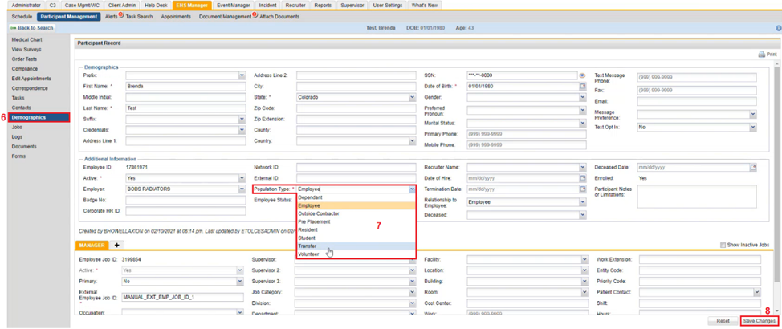
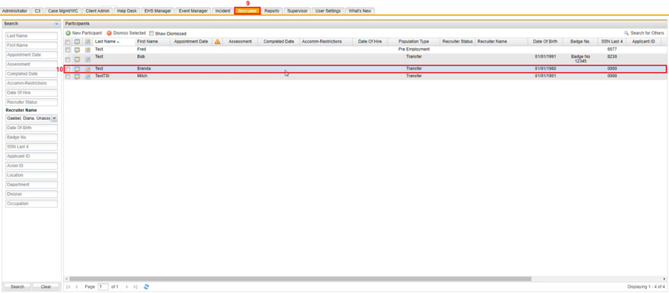

Changing an Existing Population Type Directly in a Particpant Record
To Change an Existing Population Type Directly in a Participant Record
- Select the EHS Manager tab.
- Click the Participant Management tab.
- On the Search section to the left fill in fields as needed to filter for a Participant.
- Click Search.
A list of participants fitting your search will appear in the Search Results section to the right.
- Click the Edit icon in front of the Participant in which changes are to be made for the population type.
An example of a participant type change could be when an employee is being transferred to another department.

- Click Demographics, on the left navigation panel of the Participants profile.
The Participants Record page appears.
- Click the Population Type dropdown textbox and select a different population type.
- Click Save Changes.
That participant will now be visible on the recruiter grid.

- Click the Recruiter tab on the horizontal navigation panel.
- In the Participants section, the participant where the population type was updated to Transfer will be visible.